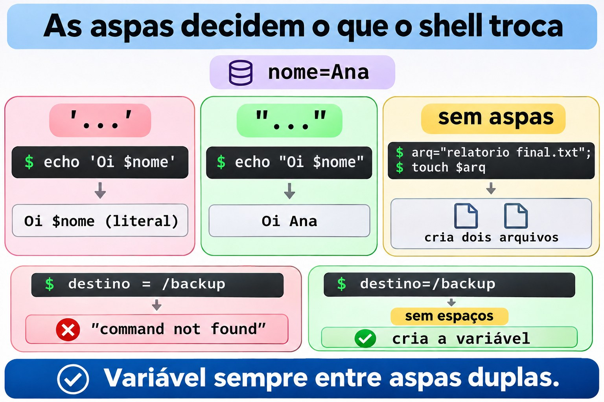
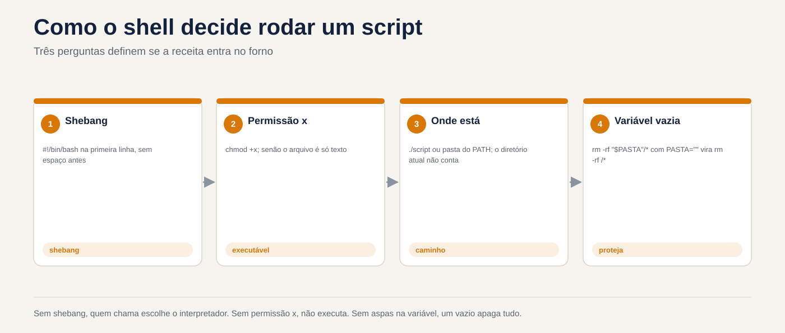
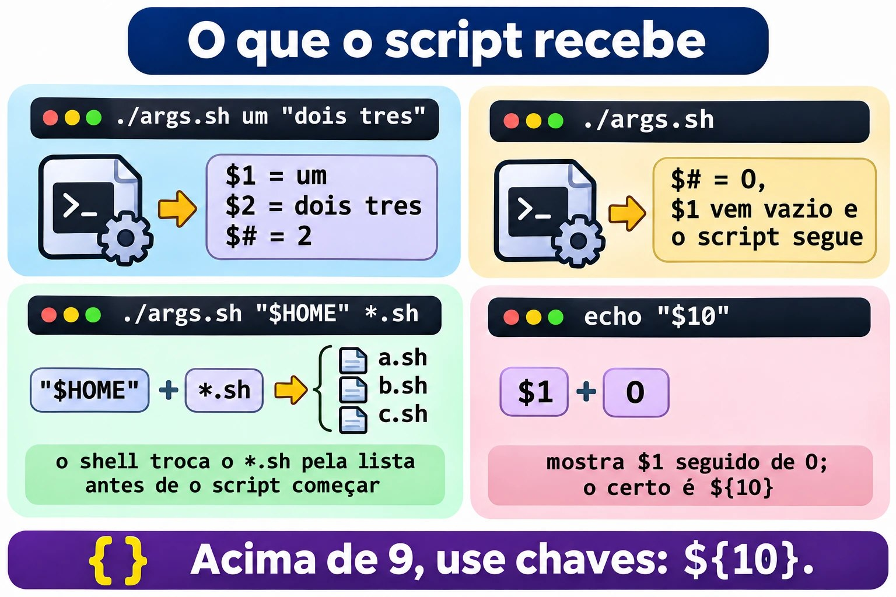
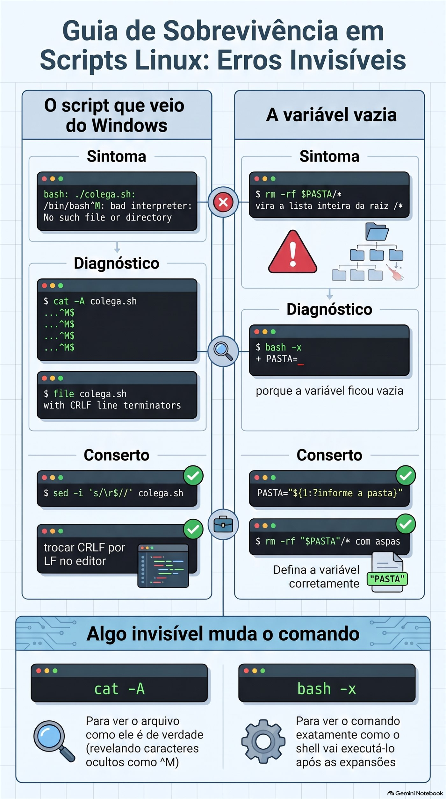

Aula 1.8 · Primeiro script
Você transforma o Protocolo de backup da Aula 1.7 num script de verdade: um arquivo que você chama pelo nome, de qualquer pasta, passando o que quer guardar, e que faz os cinco passos sempre na mesma ordem. No caminho, aprende os três erros que derrubam o primeiro script de todo mundo: a permissão que falta, a aspa que falta e o arquivo que veio do Windows.
| Ficha | Aula 1.8 |
|---|---|
| Módulo | M1 · Linha de comando, aula 8 de 10 |
| Quando | Semana 3 |
| Ao final você consegue | Escrever um script com shebang, comentários e variáveis; torná-lo executável e chamá-lo de três jeitos, sabendo a diferença; usar aspas simples e duplas sem surpresa; receber argumentos com $1, $2, $# e "$@"; proteger o script de uma variável vazia; depurar com bash -n e bash -x; instalar o script no ~/bin |
| Pré-requisitos | Aula 1.7 completa, com o ~/lab13/arquivo ainda nas VMs |
| Tempo | Cerca de 2h30 |
| Snapshots | m1a8-inicio e m1a8-fim nas duas VMs |
1 · Aquecimento
Três perguntas, de cabeça, antes de ler qualquer coisa. Escreva as respostas; o Gabarito confere no fim.
- Na Aula 1.7, qual comando testa um
.tar.gzaté o último byte, sem extrair nada? - Na Aula 1.7, por que o Protocolo usa
-Cna criação do backup? - Palpite: você salva um arquivo
ola.shcom umechodentro e digitaola.shno terminal, na mesma pasta. O que acontece?
2 · Por que importa
Sexta, 18h. Você precisa fazer o backup do /etc de seis servidores antes de uma atualização. Na Aula 1.7, o Protocolo tinha cinco passos. Seis servidores vezes cinco passos são trinta comandos digitados à mão, no fim do dia. No quarto servidor você esquece o chmod 600. No quinto, digita -cfz em vez de -czf. Ninguém percebe até o dia em que precisa do backup.
Um script não fica cansado. Ele faz os cinco passos na mesma ordem, toda vez, e você só confere o resultado. É a diferença entre saber um procedimento e ter um procedimento.
Segundo caso. Um colega escreve um script no Notepad do Windows, copia para o servidor e roda. O erro é bad interpreter: No such file or directory, apontando para o /bin/bash, que obviamente existe. Ele perde uma hora reinstalando o bash. O problema era um caractere invisível no fim de cada linha. Você vai ver esse erro hoje, de propósito, e consertar em um comando.
Terceiro caso, o perigoso. Um script de limpeza tem rm -rf "$PASTA"/*. Num dia, a variável PASTA chega vazia. O comando vira rm -rf /*. Isso já aconteceu em produtos conhecidos e em muito servidor de cliente. Hoje você aprende a linha que impede isso, e testa sem apagar nada.
E o quarto, o dia a dia: quase toda tarefa repetida vira um script simples que recebe argumentos. Não é programação, é exatamente o que esta aula ensina.
3 · Modelo mental
Um script é uma receita escrita. O shell é o cozinheiro que lê linha por linha.
Tudo o que você digita no terminal pode ir para um arquivo, uma linha embaixo da outra. Quando você manda executar, um shell abre o arquivo e faz exatamente o que faria se você digitasse. Não existe uma linguagem nova aqui: são os mesmos comandos das aulas 1.2 a 1.7.
Três perguntas definem se a receita roda:
- Quem lê a receita? A primeira linha, o shebang, diz qual cozinheiro:
#!/bin/bash. Sem ela, quem escolhe é quem chamou, e o resultado muda de máquina para máquina. - A receita pode ser executada? O Linux não olha a extensão
.sh. Ele olha a permissãox. Sem ela, o arquivo é só texto. - Onde está a receita? Se você digita só o nome, o shell procura nas pastas do
PATH, e a pasta atual não está lá. Ou você diz onde está, com./, ou instala numa pasta doPATH.
E duas peças deixam a receita reaproveitável:
- Variáveis são as anotações do cozinheiro:
destino=/backup. Ao ler,$destino. - Argumentos são os ingredientes que você entrega na hora:
backup-app.sh /etcfaz o$1valer/etc. A mesma receita serve para qualquer pasta.
você digita: backup-app.sh /etc /backup
│ │ │
$0 $1 $2 $# = 2
o shell: 1. acha o arquivo (PATH ou ./)
2. confere a permissão x
3. lê a 1ª linha #!/bin/bash e chama o bash
4. o bash executa linha por linha, trocando $1 e $2 pelos valores4 · Conceito em camadas
Essencial
O arquivo. Um script mínimo:
#!/bin/bash
# ola.sh - meu primeiro script
echo "Olá, $USER. Hoje é $(date +%F)."#!/bin/bashé o shebang. Precisa ser a primeira linha, começando exatamente com#!, sem espaço antes.- Linhas que começam com
#são comentários. O shell ignora. Você, daqui a seis meses, não. - O resto são comandos comuns. O
$(date +%F)você já usou na Aula 1.7: o shell roda o comando e põe a saída no lugar. A Aula 1.9 detalha.
Executar. Três jeitos, com resultados diferentes:
| Como você chama | O que precisa | O que acontece |
|---|---|---|
bash ola.sh | Só permissão de leitura | Você escolhe o bash; o shebang é ignorado |
./ola.sh | Permissão x | O kernel lê o shebang e chama o programa indicado |
ola.sh | Permissão x e estar numa pasta do PATH | O shell procura no PATH; a pasta atual não conta |
Para dar a permissão: chmod +x ola.sh. A Aula 2.7 explica as permissões em detalhe; por enquanto, +x basta.
Variáveis.
destino=/backup # cria: SEM espaço antes nem depois do =
echo $destino # lê com $
echo "${destino}_old" # chaves separam o nome do texto coladodestino = /backup, com espaços, não cria nada: o shell entende que você quer rodar um comando chamado destino com os argumentos = e /backup.
Aspas.
| Escreveu | O shell faz | Exemplo com nome=Ana |
|---|---|---|
'...' simples | Nada. Tudo é literal | echo 'Oi $nome' → Oi $nome |
"..." duplas | Troca $variável e $(comando), mantém espaços | echo "Oi $nome" → Oi Ana |
| Sem aspas | Troca, e depois quebra nos espaços e expande * | Perigo com nomes de arquivo com espaço |
A regra prática: variável sempre entre aspas duplas, "$destino". Sem exceção, até você saber por que quer a exceção.
Argumentos.
| Variável | Valor |
|---|---|
$0 | O nome com que o script foi chamado |
$1, $2... ${10} | O primeiro, o segundo... o décimo argumento |
$# | Quantos argumentos vieram |
"$@" | Todos os argumentos, cada um inteiro, mesmo com espaço |
$? | O código de saída do último comando. A Aula 1.9 usa muito |
Valor padrão e valor obrigatório.
destino="${2:-$HOME/backups}" # se $2 veio vazio, usa $HOME/backups
origem="${1:?uso: $0 PASTA}" # se $1 veio vazio, para o script com essa mensagemO :? é o cinto de segurança do script. A Aula 1.9 traz o if, que faz o mesmo de forma mais flexível; até lá, :? resolve.
Depurar.
bash -n script.sh # só confere a sintaxe, não executa nada
bash -x script.sh # executa mostrando cada linha, já com as variáveis trocadas

Ponte Windows
| No Windows | No Linux | Cuidado |
|---|---|---|
.bat, .cmd, .ps1 decidem o interpretador pela extensão | O shebang decide; a extensão .sh é só para humanos | Um .sh com #!/usr/bin/python3 roda como Python |
Set-ExecutionPolicy decide se scripts rodam | A permissão x de cada arquivo decide | Não existe um interruptor global |
A pasta atual entra na busca do cmd | A pasta atual não está no PATH | Por isso o ./ |
set destino=C:\bkp e %destino% | destino=/bkp e $destino | No Linux, espaço em volta do = quebra |
%1, %2, %* | $1, $2, "$@" | |
Fim de linha CRLF (\r\n) | Fim de linha LF (\n) | Script salvo no Windows quebra no Linux. Quebra A |
No PowerShell, $destino = "C:\bkp" aceita espaços em volta do =. É o hábito que mais derruba quem vem do Windows.
Avançado
sourceou.não executam: incluem../script.shroda num shell novo, filho do seu. Umcdou uma variável criada lá dentro morre quando o script termina.source script.shroda as linhas no seu próprio shell, e ocdfica. É assim que o~/.bashrcé lido.export. Uma variável criada no terminal não chega ao script, a não ser que seja exportada:export DESTINO=/backup. Variáveis de ambiente, comoPATH,HOMEeUSER, já são exportadas.set -ufaz o script parar ao usar uma variável que não existe, em vez de tratá-la como vazia.set -epara no primeiro comando que falhar. São úteis, mas têm armadilhas; a Aula 1.9 mostra quando confiar neles.#!/usr/bin/env bashprocura o bash noPATH, útil quando ele não está em/bin, como em alguns BSDs. Em Rocky e Debian,#!/bin/bashfunciona sempre.readonlyimpede que uma variável seja mudada depois:readonly DESTINO=/backup.
5 · Rocky × Debian
| Rocky Linux 9 e 10 | Debian 13 | |
|---|---|---|
/bin/sh aponta para | bash | dash, um shell menor e mais rápido |
Script com #!/bin/sh e recurso do bash, como {1..3} | Funciona, porque é o bash | Quebra ou dá resultado diferente |
~/bin no PATH | Já está, pelo ~/.bashrc, mesmo que a pasta ainda não exista | Entra pelo ~/.profile, só se a pasta existir no login. Crie e saia da sessão |
~/.local/bin no PATH | Já está | Mesma regra do ~/bin |
dos2unix para tirar o CRLF | sudo dnf install dos2unix | sudo apt install dos2unix |
bash --version | 5.1 na Rocky 9, 5.2 na Rocky 10 | 5.2 |
A regra que evita a primeira linha da tabela: se usa recursos do bash, escreva #!/bin/bash. Use #!/bin/sh só quando o script for POSIX puro, e teste no Debian.
6 · Lab guiado
Faça tudo nas duas VMs, a não ser quando o passo disser só uma. Os scripts ficam em ~/lab13/scripts, e a matéria-prima é a aplicação de mentira da Aula 1.7, em ~/lab13/arquivo/app. Em cada passo, quando aparecer Preveja, escreva a resposta antes de apertar Enter.


Passo 1 · Preparar
No nó Proxmox:
qm snapshot 201 m1a8-inicio
qm snapshot 202 m1a8-inicioEm cada VM:
ls ~/lab13/arquivo/app
mkdir -p ~/lab13/scripts
cd ~/lab13/scripts
echo "$SHELL"
bash --version | head -1O ls deve mostrar conf, iniciar.sh, logs e www. Se a pasta não existir, refaça o Passo 1 da Aula 1.7. O $SHELL deve ser /bin/bash.
Passo 2 · O primeiro arquivo e os três jeitos de chamar
Crie o script com um here-document, o cat > arquivo <<'EOF' que você usou na Aula 1.7. As aspas em 'EOF' fazem o texto entrar no arquivo exatamente como está, sem trocar o $USER agora.
cat > ola.sh <<'EOF'
#!/bin/bash
# ola.sh - meu primeiro script
echo "Olá, $USER. Hoje é $(date +%F)."
echo "Estou rodando em $(hostname)."
EOF
cat ola.sh
ls -l ola.shPreveja. Você vai digitar ola.sh, só o nome, estando na mesma pasta. O que aparece?
ola.shbash: ola.sh: command not found. O arquivo está ali, mas o shell não procura na pasta atual: procura nas pastas do PATH. Veja quais são:
echo "$PATH"Agora diga onde o arquivo está, com ./:
./ola.shbash: ./ola.sh: Permission denied. O ls -l de antes mostrou -rw-r--r--: não há nenhum x. Para o Linux, isso é texto, não programa.
Decida 1 · O jeito que funciona sem x. Antes de dar a permissão, você roda bash ola.sh. O que acontece?
- A)
Permission denied, como no./ola.sh. - B) Funciona, porque quem está sendo executado é o
bash, e oola.shé só um arquivo que ele lê. - C) Funciona, porque o
bashignora as permissões de qualquer arquivo. - D)
command not found, porque oola.shnão está noPATH.
Escolha a letra antes de olhar a tabela.
| Se você marcou | Resultado | Por quê |
|---|---|---|
| A | ❌ Errada | O x é exigido de quem é executado. Aqui o executado é o /bin/bash, que tem x. O ola.sh só precisa ser lido, e tem r. |
| B | ✅ Certa | O bash recebe o nome do arquivo como argumento, abre e lê linha por linha, como faria com um cat. O shebang vira um comentário comum. |
| C | ❌ Errada | Se você tirar o r com chmod -r ola.sh, o bash ola.sh falha com Permission denied. Ele respeita a leitura; só não precisa do x. |
| D | ❌ Errada | O PATH só entra em jogo para achar o primeiro nome da linha, que aqui é bash. O ola.sh é um argumento com caminho relativo. |
Para fixar: bash script.sh precisa de r; ./script.sh precisa de r e x; script.sh precisa de r, x e estar no PATH.
Confira:
bash ola.sh
chmod +x ola.sh
ls -l ola.sh
./ola.shAgora o ls -l mostra -rwxr-xr-x, e o ./ola.sh funciona. Uma última experiência com o shebang:
head -1 ola.sh
file ola.shO file responde algo como Bourne-Again shell script, Unicode text, UTF-8 text executable. Ele leu a primeira linha, como o kernel faz.
Passo 3 · Variáveis e aspas, no terminal
Antes de pôr variáveis num script, erre no terminal, onde é barato:
destino = /backupPreveja a mensagem. É bash: destino: command not found. O shell leu destino como um comando, com dois argumentos. Agora do jeito certo:
destino=/backup
echo $destino
echo "Os backups vão para $destino"
echo 'Os backups vão para $destino'
echo "${destino}_antigo"
echo "$destino_antigo"As duas últimas linhas são a pegadinha das chaves. "${destino}_antigo" mostra /backup_antigo. "$destino_antigo" mostra uma linha vazia: o shell procurou uma variável chamada destino_antigo, que não existe, e trocou por nada, sem erro nenhum.
Agora um nome de arquivo com espaço, o caso que mais quebra scripts:
cd /tmp
arq="relatorio final.txt"Decida 2 · A aspa que faltou. Você digita touch $arq, sem aspas, e depois ls. O que aparece?
- A) Um arquivo
relatorio final.txt. - B) Dois arquivos:
relatorioefinal.txt. - C) Um arquivo chamado
$arq. - D) Erro, porque o
touchnão aceita espaço no nome.
Escolha a letra antes de olhar a tabela.
| Se você marcou | Resultado | Por quê |
|---|---|---|
| A | ❌ Errada | Seria o resultado de touch "$arq". Sem aspas, depois de trocar a variável o shell quebra o texto nos espaços. |
| B | ✅ Certa | O shell troca $arq por relatorio final.txt e depois divide nos espaços. O touch recebe dois argumentos e cria dois arquivos. |
| C | ❌ Errada | Isso aconteceria com aspas simples: touch '$arq'. Sem aspas, a variável é trocada. |
| D | ❌ Errada | O touch aceita qualquer nome. Ele nem fica sabendo que havia um espaço: recebe dois nomes separados. |
Para fixar: variável sempre entre aspas duplas. touch "$arq", rm "$arq", cp "$arq" "$destino".
Confira e limpe:
touch $arq
ls -l relatorio final.txt
touch "$arq"
ls -l "$arq"
rm -v relatorio final.txt "$arq"
cd ~/lab13/scriptsImagine o mesmo erro com rm $arq: você apagaria relatorio e final.txt, que podiam ser outros arquivos, e o relatorio final.txt continuaria lá.
Passo 4 · Argumentos
Um script que só mostra o que recebeu:
cat > args.sh <<'EOF'
#!/bin/bash
# args.sh - mostra os argumentos recebidos
echo "Nome do script: $0"
echo "Primeiro: $1"
echo "Segundo: $2"
echo "Quantidade: $#"
echo "Todos, um por linha:"
printf ' [%s]\n' "$@"
EOF
chmod +x args.shO printf repete o modelo [%s] uma vez para cada argumento. É um truque para ver exatamente onde cada argumento começa e termina.
Preveja o $# de cada linha antes de rodar:
./args.sh
./args.sh um dois tres
./args.sh um "dois tres"
./args.sh "$HOME" *.shRespostas: 0, 3, 2, e a última depende de quantos .sh existem na pasta. O *.sh é expandido antes de o script começar: ele nunca vê o asterisco, só recebe a lista de nomes. Repare também que, sem argumento, $1 vem vazio e o script segue em frente, sem reclamar. Guarde isso para a Quebra B.
Decida 3 · O décimo argumento. Você roda ./args.sh a b c d e f g h i j. Dentro do script, uma linha diz echo "$10". O que ela mostra?
- A)
j, o décimo argumento. - B)
a0, o primeiro argumento seguido de um zero. - C) Uma linha vazia, porque só existem
$1a$9. - D) Erro de sintaxe.
Escolha a letra antes de olhar a tabela.
| Se você marcou | Resultado | Por quê |
|---|---|---|
| A | ❌ Errada | Seria o resultado de "${10}". Sem chaves, o shell só lê um dígito depois do $. |
| B | ✅ Certa | O shell lê $1, que vale a, e cola o 0 como texto. É a mesma pegadinha do $destino_antigo. |
| C | ❌ Errada | Existem ${10}, ${11} e quantos você passar. Só a forma curta, sem chaves, para no 9. |
| D | ❌ Errada | Não há erro: o shell aceita $10 e o interpreta, de um jeito que você não queria. |
Para fixar: acima de 9, use chaves: ${10}. Na dúvida, use chaves sempre.
Confira:
echo 'echo "com \$10: $10"' >> args.sh
echo 'echo "com \${10}: ${10}"' >> args.sh
tail -2 args.sh
./args.sh a b c d e f g h i j

*.sh já trocado pelo shell, e chaves a partir do décimo.Passo 5 · O Protocolo vira script
Este é o passo central. Você vai escrever o mesmo script três vezes, cada versão melhor que a anterior.
Versão 1, tudo fixo. É o Protocolo da Aula 1.7, colado num arquivo:
cat > backup-app.sh <<'EOF'
#!/bin/bash
# backup-app.sh v1 - tudo fixo
mkdir -p ~/backups
tar -czf ~/backups/app-$(date +%F_%H%M).tar.gz -C ~/lab13/arquivo app
ls -lh ~/backups
EOF
chmod +x backup-app.sh
./backup-app.shFunciona, mas só serve para essa pasta, e o nome do arquivo aparece só dentro do tar. Se você quiser testar e gravar o sha256sum em seguida, vai ter de repetir o nome, com a hora, que já mudou.
Versão 2, com variáveis. O nome é calculado uma vez e usado em todo lugar:
cat > backup-app.sh <<'EOF'
#!/bin/bash
# backup-app.sh v2 - variáveis
origem="$HOME/lab13/arquivo/app"
destino="$HOME/backups"
data="$(date +%F_%H%M)"
arquivo="$destino/app-$data.tar.gz"
mkdir -p "$destino"
tar -czf "$arquivo" -C "$HOME/lab13/arquivo" app
tar -tzf "$arquivo" > /dev/null && echo "OK: o arquivo abre até o fim"
sha256sum "$arquivo" > "$arquivo.sha256"
chmod 600 "$arquivo" "$arquivo.sha256"
ls -lh "$arquivo" "$arquivo.sha256"
EOF
bash -n backup-app.sh
./backup-app.shO bash -n não mostra nada quando a sintaxe está certa. Repare que dentro do script usei $HOME, e não ~: o ~ não é trocado dentro de aspas, e uma variável entre aspas é mais segura.
Preveja. Rode de novo, agora com bash -x. Quantas linhas começando com + vão aparecer?
bash -x ./backup-app.shUma para cada comando, com as variáveis já trocadas pelos valores: + data=2026-11-02_1430, + tar -czf /home/student/backups/app-2026-11-02_1430.tar.gz .... O -x é o raio X do script: quando algo der errado, é a primeira coisa que você roda.
Versão 3, com argumentos. Agora a pasta vem de fora, e o destino tem um valor padrão:
cat > backup-app.sh <<'EOF'
#!/bin/bash
# backup-app.sh - backup de uma pasta pelo Protocolo da Aula 1.7
# Uso: backup-app.sh PASTA [DESTINO]
# PASTA o que guardar, obrigatório
# DESTINO onde guardar, padrão ~/backups
origem="${1:?uso: $0 PASTA [DESTINO]}"
destino="${2:-$HOME/backups}"
nome="$(basename "$origem")"
pai="$(dirname "$origem")"
data="$(date +%F_%H%M)"
arquivo="$destino/$nome-$data.tar.gz"
echo "Backup de $origem para $arquivo"
mkdir -p "$destino"
tar -czf "$arquivo" -C "$pai" "$nome"
tar -tzf "$arquivo" > /dev/null && echo "OK: o arquivo abre até o fim"
sha256sum "$arquivo" > "$arquivo.sha256"
chmod 600 "$arquivo" "$arquivo.sha256"
ls -lh "$arquivo" "$arquivo.sha256"
EOF
bash -n backup-app.shO basename devolve o último pedaço do caminho, e o dirname, o resto. Para /home/student/lab13/arquivo/app, eles devolvem app e /home/student/lab13/arquivo. É o -C do Protocolo, calculado sozinho.
Teste os três casos:
./backup-app.sh
./backup-app.sh ~/lab13/arquivo/app
./backup-app.sh ~/lab13/arquivo/app /tmp/bkp-teste
ls -l ~/backups /tmp/bkp-testeO primeiro para na hora com ./backup-app.sh: line 7: 1: uso: ./backup-app.sh PASTA [DESTINO], sem criar nada. O segundo usa o destino padrão. O terceiro grava em /tmp/bkp-teste. Confira a impressão digital do último:
sha256sum -c /tmp/bkp-teste/app-*.sha256OK. Como o sha256sum gravou o caminho completo, a conferência funciona de qualquer pasta.
Decida 4 · O backup de /etc. Você roda ./backup-app.sh /etc, como usuário comum. O que acontece?
- A) Funciona igual, com todo o
/etcdentro. - B) O
tarreclama de vários arquivos que não consegue ler, como oshadow, cria um backup incompleto, e mesmo assim apareceOK: o arquivo abre até o fim. - C) O script para na primeira linha, porque
/etcnão é uma pasta do usuário. - D) O
tarrecusa o backup inteiro e nada é criado.
Escolha a letra antes de olhar a tabela.
| Se você marcou | Resultado | Por quê |
|---|---|---|
| A | ❌ Errada | Usuário comum não lê /etc/shadow, /etc/sudoers e outros. O tar não tem como guardar o que não consegue ler. |
| B | ✅ Certa | O tar mostra Cannot open: Permission denied para cada um, guarda o resto e termina com erro. Mas a linha seguinte só testa se o arquivo abre, e ele abre. O script diz OK para um backup sem os arquivos mais importantes. |
| C | ❌ Errada | O :? só confere se o $1 veio. /etc veio, então o script segue. |
| D | ❌ Errada | O tar é teimoso: pula o que não consegue ler e continua. Por isso o backup existe, só que incompleto. |
Para fixar: um script que não confere o resultado de cada passo mente para você. A Aula 1.9 ensina o if e o $?, e esta é a primeira coisa que você vai consertar com eles.
Confira, olhando o fim da saída:
./backup-app.sh /etc /tmp/bkp-teste 2>&1 | tail -5
sudo ./backup-app.sh /etc /tmp/bkp-teste | tail -3Com sudo, não há reclamação, e o arquivo fica com dono root e permissão 600. É o que um backup do /etc deve ser.
Passo 6 · Instalar no ~/bin
Um script que você chama com ./ de dentro de uma pasta ainda não é uma ferramenta. Instale:
mkdir -p ~/bin
cp backup-app.sh ~/bin/
cd /
backup-app.sh ~/lab13/arquivo/appDecida 5 · Rocky e Debian. Você fez exatamente isso nas duas VMs, sem sair da sessão. Qual é o resultado?
- A) Funciona nas duas.
- B) Funciona na rocky-lab; na debian-lab,
command not found. - C) Funciona na debian-lab; na rocky-lab,
command not found. - D) Não funciona em nenhuma até reiniciar a VM.
Escolha a letra antes de olhar a tabela.
| Se você marcou | Resultado | Por quê |
|---|---|---|
| A | ❌ Errada | No Debian, o ~/bin só entra no PATH se existir no momento do login. Ele não existia quando você entrou. |
| B | ✅ Certa | O ~/.bashrc da Rocky põe ~/bin no PATH sempre. O ~/.profile do Debian só põe se a pasta já existir ao entrar. |
| C | ❌ Errada | É o contrário. Confira com echo "$PATH" nas duas. |
| D | ❌ Errada | Reiniciar resolve, mas é exagero. Basta sair e entrar de novo, ou ler o arquivo de novo com source ~/.profile. |
Para fixar: depois de criar o ~/bin, saia e entre de novo. Confira com type nome-do-script.
Confira, na debian-lab:
echo "$PATH" | tr ':' '\n' | grep bin
source ~/.profile
type backup-app.sh
cd / && backup-app.sh ~/lab13/arquivo/appO type responde backup-app.sh is /home/student/bin/backup-app.sh. O script virou um comando.
Protocolo · Script que não envergonha
- Primeira linha:
#!/bin/bash. Segunda: um comentário dizendo o que faz. Terceira:# Uso:com os argumentos.- Argumento obrigatório com
${1:?uso: ...}; opcional com${2:-padrão}.- Calcule nomes uma vez, em variáveis, e use as variáveis em todo lugar.
- Toda variável entre aspas duplas:
"$arquivo".- Antes de rodar:
bash -n. Se algo estranho acontecer:bash -x.- Teste sem argumentos, com um argumento e com um caminho que tem espaço.
chmod +x, instale em~/binou, para todos os usuários, em/usr/local/bin.

7 · Quebre e conserte
Quebra A · O script que veio do Windows
Um colega manda um script que escreveu no Notepad. Simule o arquivo dele: o \r\n no fim de cada linha é exatamente o que o Notepad grava.
cd ~/lab13/scripts
printf '#!/bin/bash\r\n# do colega\r\necho "versao do colega"\r\n' > colega.sh
chmod +x colega.sh
./colega.shObserve. A mensagem é algo como:
bash: ./colega.sh: /bin/bash^M: bad interpreter: No such file or directoryO /bin/bash existe. Mas repare no ^M colado nele.
Diagnostique. Mostre o que o cat normal esconde:
cat colega.sh
cat -A colega.sh
file colega.shO cat -A mostra ^M$ no fim de cada linha: ^M é o \r, e $ marca o fim da linha. O file diz with CRLF line terminators. O kernel leu a primeira linha como /bin/bash\r e procurou um programa com esse nome, com um caractere invisível no fim. Não existe.
Decida A · O conserto. O que resolve de vez?
- A) Rodar com
bash colega.sh. - B) Tirar o
\rdo fim de cada linha:sed -i 's/\r$//' colega.sh, oudos2unix colega.sh. - C) Reinstalar o bash.
- D) Trocar o shebang para
#!/bin/sh.
Escolha a letra antes de olhar a tabela.
| Se você marcou | Resultado | Por quê |
|---|---|---|
| A | ❌ Errada | Escapa do shebang, mas o bash lê cada linha com o \r no fim. O echo imprime um \r escondido, e um cd /tmp\r falha com No such file or directory. O problema muda de lugar. |
| B | ✅ Certa | O arquivo passa a ter fins de linha do Linux. O sed já vem instalado nas duas VMs; o dos2unix faz o mesmo e precisa ser instalado. |
| C | ❌ Errada | O bash está perfeito. É o caso da seção 2: uma hora perdida no lugar errado. |
| D | ❌ Errada | A primeira linha continua com \r, agora /bin/sh^M, e o erro é o mesmo. |
Para fixar: bad interpreter com ^M é sempre CRLF. Confira com cat -A e conserte com sed -i 's/\r$//'.
Conserte.
sed -i 's/\r$//' colega.sh
cat -A colega.sh
file colega.sh
./colega.shAgora o cat -A mostra só $ no fim, e o script roda. Para não receber o problema: no VS Code, o canto inferior direito mostra CRLF; clique e troque para LF antes de salvar. No Notepad++, menu Editar, Conversão de fim de linha.
Quebra B · A variável vazia
Este é o erro que já apagou servidores inteiros. Você vai reproduzir com segurança: o script só mostra o comando, com echo, e não apaga nada.
cat > limpa.sh <<'EOF'
#!/bin/bash
# limpa.sh - limpa uma pasta de temporários (versão perigosa)
PASTA=$1
echo "Vou executar:" rm -rf $PASTA/*
EOF
chmod +x limpa.shPrimeiro, o uso normal:
mkdir -p /tmp/temporarios && touch /tmp/temporarios/a.tmp /tmp/temporarios/b.tmp
./limpa.sh /tmp/temporariosVou executar: rm -rf /tmp/temporarios/a.tmp /tmp/temporarios/b.tmp. Certo. Agora alguém esquece o argumento.
Observe.
./limpa.shVou executar: rm -rf /bin /boot /dev /etc /home /lib .... A lista inteira da raiz; na Rocky, ela começa por /afs. Sem o echo, este era o fim do servidor.
Diagnostique. Use o raio X:
bash -x ./limpa.shA primeira linha com + é + PASTA=: a variável recebeu nada. Em seguida, $PASTA/* virou /*, e o shell expandiu o asterisco para tudo o que existe na raiz.
Decida B · O cinto de segurança. Qual troca impede o desastre?
- A) Pôr aspas:
rm -rf "$PASTA"/*. - B) Exigir o argumento:
PASTA="${1:?informe a pasta}", e manter as aspas norm. - C) Trocar
rm -rfporrm -r. - D) Rodar o script sempre como usuário comum.
Escolha a letra antes de olhar a tabela.
| Se você marcou | Resultado | Por quê |
|---|---|---|
| A | ❌ Errada | As aspas protegem contra espaços, mas "$PASTA"/* com PASTA vazio continua sendo ""/*, ou seja, /*. Ajuda, não salva. |
| B | ✅ Certa | Sem argumento, o script para na linha da variável, antes de chegar ao rm. As aspas continuam lá para o caso de a pasta ter espaço no nome. |
| C | ❌ Errada | Sem o f, o rm pergunta em arquivos protegidos e mostra erros, mas apaga tudo o que tem permissão de apagar. |
| D | ❌ Errada | Diminui o estrago, mas o usuário ainda apaga tudo o que é dele, inclusive o /home dele. E scripts de limpeza costumam rodar como root, no cron. |
Para fixar: toda variável usada num rm, mv ou chmod -R precisa ser obrigatória, com :?, e estar entre aspas.
Conserte.
sed -i 's|^PASTA=\$1$|PASTA="${1:?informe a pasta}"|' limpa.sh
sed -i 's|rm -rf \$PASTA/\*|rm -rf "$PASTA"/*|' limpa.sh
cat limpa.sh
./limpa.sh
./limpa.sh /tmp/temporariosAgora, sem argumento, o script para com line 3: 1: informe a pasta, e com argumento funciona como antes. Abra o backup-app.sh e confira que ele já nasceu com esse cinto, no $1.
A lição
Os dois erros de hoje têm a mesma cara: algo invisível que muda o comando. Um \r que você não vê no fim da linha. Uma variável vazia que você não vê no meio do rm. Os dois se revelam com as mesmas ferramentas: cat -A para ver o arquivo como ele é, e bash -x para ver o comando como o shell vai executá-lo. Quando um script faz algo que você não pediu, não leia o script: rode com -x e leia o que ele fez.


8 · Armadilhas
| Você digita ou vê | O que acontece | O certo |
|---|---|---|
destino = /backup | destino: command not found | destino=/backup, sem espaços |
script.sh, na pasta do script | command not found | ./script.sh, ou instalar no PATH |
./script.sh logo depois de criar | Permission denied | chmod +x script.sh |
bad interpreter com ^M | Arquivo com CRLF do Windows | sed -i 's/\r$//' script.sh |
echo '$HOME' | Mostra $HOME, literal | Aspas duplas: echo "$HOME" |
touch $arq com espaço no nome | Cria dois arquivos | touch "$arq" |
"$nome_backup" | Procura uma variável chamada nome_backup, que não existe, e mostra vazio, sem erro | "${nome}_backup", sempre com chaves ao colar texto |
echo "$10" | Mostra $1 seguido de 0 | "${10}" |
rm -rf "$PASTA"/* sem conferir $PASTA | Com a variável vazia, vira rm -rf /* | PASTA="${1:?...}" antes |
#!/bin/sh e {1..5} no script | Funciona na Rocky, quebra no Debian | #!/bin/bash |
~ dentro de aspas: "~/backups" | Não é trocado; cria uma pasta chamada ~ | "$HOME/backups" |
cd /var/log dentro do script | Ao terminar, você continua na pasta de antes | Normal: o script roda num shell filho. Para ficar, source |
Script com tar que falhou e OK no fim | O teste seguinte não sabe que o tar falhou | Conferir o $?. Aula 1.9 |
9 · Quiz
Dez perguntas, sem consultar. Escreva a letra ou a resposta de cada uma e só depois abra o Gabarito.
1. Qual linha cria a variável porta com o valor 8080?
- A)
porta = 8080 - B)
$porta=8080 - C)
porta=8080 - D)
set porta 8080
2. O s.sh tem permissão -rw-r--r--. Qual destas chamadas falha?
- A)
bash s.sh - B)
./s.sh - C)
source s.sh - D)
sh s.sh
3. Você roda ./args.sh "um dois" tres. Quanto valem $# e $1?
- A)
3eum - B)
2eum dois - C)
2e"um dois", com as aspas - D)
3eum dois
4. Com nome=web01, o que mostra echo 'Servidor: $nome'?
- A)
Servidor: web01 - B)
Servidor: $nome - C)
Servidor: - D) Erro de sintaxe
5. O shebang de um script diz #!/bin/bsh, com um erro de digitação. O que acontece com ./script.sh e com bash script.sh?
- A) Os dois funcionam: o bash corrige o nome.
- B) Os dois falham com
bad interpreter. - C)
./script.shfalha combad interpreter;bash script.shfunciona, porque o shebang vira comentário. - D)
./script.shfunciona;bash script.shfalha.
6. No script, destino="${2:-/backup}". Quanto vale destino em ./s.sh /etc e em ./s.sh /etc /mnt/usb?
- A)
/backupnos dois - B) vazio e
/mnt/usb - C)
/backupe/mnt/usb - D)
/etce/mnt/usb
7. O que faz origem="${1:?falta a pasta}" quando o script é chamado sem argumentos?
8. Você criou ~/bin e copiou o meu.sh para lá, numa VM Debian, sem sair da sessão. meu.sh dá command not found. Qual é a causa mais provável, e como confirmar?
9. O vai.sh contém só cd /var/log. Onde você está depois de ./vai.sh? E depois de source vai.sh?
10. Which of the following variables contains the number of arguments passed to a shell script?
- A)
$@ - B)
$# - C)
$* - D)
$0 - E)
$?
10 · Flashcards e cola
Para saber de cor
Esta parte é para guardar na cabeça. É o esqueleto de todo script que você vai escrever.
#!/bin/bashna primeira linha, sem espaço anteschmod +x script.she depois./script.shnome=valor, sem espaço;"$nome"para ler, sempre com aspas duplas'...'não troca nada;"..."troca$variávele$(comando)$1,$2: argumentos;$#: quantos;"$@": todos;$0: o nome do script${1:?mensagem}: obrigatório;${2:-padrão}: opcionalbash -n script.sh: confere a sintaxe;bash -x script.sh: mostra cada linha executadacat -A script.sh: mostra o^Mdo Windows;sed -i 's/\r$//' script.shconserta
Para consultar
Esta parte você não precisa decorar. Guarde onde ela está.
"${nome}_texto": chaves ao colar texto no nome;${10}acima de 9basename /a/b/cdác;dirname /a/b/cdá/a/bsource script.shou. script.sh: roda no shell atual;cde variáveis ficamexport NOME=valor: a variável chega aos scripts chamados depoistype comandooucommand -v comando: de onde vem o comando~/binpara você;/usr/local/binpara todos os usuários, comsudo- Debian:
~/binentra noPATHno login, se existir. Rocky: sempre #!/bin/shno Debian é odash, sem os recursos do bashset -upara em variável inexistente;set -epara no primeiro erro. Aula 1.9file script.shmostrawith CRLF line terminatorsquando veio do Windows
Flashcards
| Frente | Verso |
|---|---|
| O que é o shebang? | A primeira linha, #!/bin/bash, que diz ao kernel qual programa lê o script |
O Linux decide pela extensão .sh? | Não. Decide pelo shebang e pela permissão x |
Por que script.sh dá command not found na pasta do script? | A pasta atual não está no PATH. Use ./script.sh |
Que permissão o bash script.sh exige? | Só leitura. Quem é executado é o bash |
O que há de errado em nome = valor? | Os espaços. O shell roda um comando chamado nome |
Diferença entre '$HOME' e "$HOME"? | Simples é literal; duplas trocam pelo valor |
O que acontece com touch $arq se arq tem espaço? | Cria um arquivo para cada palavra |
O que guarda $#? | Quantos argumentos o script recebeu |
Por que "$@" e não $*? | "$@" mantém cada argumento inteiro, mesmo com espaço |
O que mostra "$10"? | $1 seguido de um 0. Use ${10} |
O que faz ${1:?msg}? | Para o script com a mensagem se $1 vier vazio |
O que faz ${2:-/backup}? | Usa /backup se $2 vier vazio |
bad interpreter com ^M: causa? | Fins de linha do Windows, CRLF |
Para que serve bash -x? | Mostrar cada comando já com as variáveis trocadas |
Por que um cd dentro do script não muda sua pasta? | O script roda num shell filho, que morre no fim |
11 · Checklist de saída
Marque só o que você consegue fazer sem olhar a aula:
- [ ] Escrever um script com shebang, comentário de uso e variáveis
- [ ] Explicar por que
script.sh,./script.shebash script.shdão resultados diferentes - [ ] Usar aspas simples e duplas e prever o resultado
- [ ] Receber argumentos com
$1,$2e$#, e mostrar todos com"$@" - [ ] Tornar um argumento obrigatório e dar valor padrão a outro
- [ ] Depurar com
bash -nebash -x - [ ] Reconhecer e consertar um script com CRLF
- [ ] Explicar por que uma variável vazia num
rmé perigosa, e impedir - [ ] Instalar um script no
~/bine fazer funcionar no Rocky e no Debian - [ ] Explicar a diferença entre executar e usar
source
Último exercício, sem olhar. Feche esta aula. Em ~/lab13/scripts, crie o saudacao.sh:
- Ele recebe um nome como primeiro argumento, obrigatório. Sem ele, para com a mensagem
uso: saudacao.sh NOME [CIDADE]. - Recebe uma cidade como segundo argumento, opcional, com padrão
Roma. - Mostra
Olá, NOME, de CIDADE. Você me passou N argumentos. - Funciona com
./saudacao.sh "Ana Maria" Milano, mostrando o nome inteiro. - Está instalado no
~/bine funciona a partir de/tmp.
As respostas estão no fim do Gabarito.
Snapshots de fechamento. No nó Proxmox:
qm snapshot 201 m1a8-fim
qm snapshot 202 m1a8-fimNão apague o ~/bin/backup-app.sh: na Aula 1.9 ele ganha if, código de saída e um log, e deixa de dizer OK para um backup incompleto.
12 · Na vida real
Missão da semana, só leitura. Escolha um servidor que você administra de verdade. Se ele for de cliente, faça só o que o contrato permite; se tiver dúvida, use a rocky-lab e a debian-lab. Nenhum comando desta missão cria, edita, executa ou apaga script algum: você só lê.
Onde moram os scripts da casa:
ls -l /usr/local/bin /usr/local/sbin ~/bin 2> /dev/null
ls -l /etc/cron.daily /etc/cron.d 2> /dev/null
sudo crontab -l 2> /dev/null
crontab -l 2> /dev/nullPara cada script que aparecer, olhe a primeira linha e o tipo:
file /usr/local/bin/*
head -n 1 /usr/local/bin/* 2> /dev/nullProcure scripts que vieram do Windows:
grep -l $'\r' /usr/local/bin/* /usr/local/sbin/* 2> /dev/nullO $'\r' é o jeito do bash de escrever o \r na linha de comando. Se aparecer algum nome, esse script funciona por sorte, ou está sendo chamado com bash script, ou não funciona e ninguém percebeu.
Escolha o script mais importante, como o de backup, e leia com calma:
less /usr/local/bin/NOME-DO-SCRIPT
grep -n 'rm ' /usr/local/bin/NOME-DO-SCRIPTPara cada rm que o grep mostrar, olhe se a variável está entre aspas e se alguém garante que ela não chega vazia.
No Proxmox, os scripts costumam morar em /root, em /usr/local/bin ou em hooks de backup:
ls -l /root/*.sh /usr/local/bin 2> /dev/null
grep -n 'script' /etc/vzdump.confPara o diário. Responda em poucas linhas:
- Quantos scripts da casa você encontrou? Quais rodam sozinhos, pelo cron?
- Todos têm shebang? Algum usa
#!/bin/shcom recursos do bash, num Debian? - Algum tinha
^M? - O script mais importante tem um comentário dizendo o que faz e como usar?
- Algum
rmcom variável sem aspas, ou sem conferência de vazio? Anote o arquivo e a linha, e não mexa: proponha a correção a quem é responsável.
Desafio da semana. Um script por dia. Copie um script real, de um servidor que você administra, para a rocky-lab, sem senhas nem chaves dentro. Leia com o Protocolo da seção 6 ao lado e anote o que falta: shebang, uso, aspas, :?. Reescreva a cópia, no laboratório, com o que faltava, e rode com bash -n e bash -x. No diário, uma linha por dia: qual script, quantos itens do Protocolo faltavam, e qual era o mais perigoso.
Amanhã, sem olhar. Abra um terminal amanhã e, sem consultar nada:
- Escreva um script de três linhas que mostra o
hostnamee a data. - Rode com
bash, tente com./, dê a permissão e rode de novo. - Faça ele receber um nome como argumento obrigatório.
- Rode com
bash -xe explique cada linha com+. - Explique em voz alta por que
rm -rf $PASTA/*é perigoso.
Se travar em algum, volte só ao Passo daquele item.
13 · Com o DeepTutor
Use o DeepTutor da sua rede local depois do lab, não no lugar dele. Os comandos começam com !:
!quiz Aula 1.8: peça dez perguntas novas sobre aspas, argumentos e permissões, no formato das Decidas.!explica aspas: peça a diferença entre simples, duplas e nenhuma, com um exemplo que quebre em cada caso.!feynman: explique para um estagiário por quescript.shdácommand not foundna pasta do script. O DeepTutor aponta onde ficou vago.!quebra: peça um script quebrado novo, como um$10, um~entre aspas ou uma variável com espaço, e conserte só combash -xecat -A.!quiz 1.8 script: peça três tarefas práticas do tipo "crie/usr/local/bin/xque recebe um argumento", cada uma com o comando que confirma o resultado.!cartoes: gere flashcards a partir da seção 10 e revise em três dias.!erro: cole uma mensagem real, comobad interpreterouunbound variable, e peça a causa antes da solução.!revisao: agende a revisão da Aula 1.8 para daqui a três dias e para daqui a uma semana.
Gabarito comentado
Aquecimento
gzip -t arquivo.tar.gz, outar -tzf arquivo.tar.gz > /dev/null. Os dois leem o arquivo até o último byte. Ofilelê só o começo e não pega um backup cortado.- Para os caminhos ficarem relativos e começarem numa pasta com nome. Assim, a extração cai na pasta onde você está, dentro de uma pasta só, e nunca por cima do sistema. Hoje o script calculou esse
-Csozinho, com odirname. command not found. O shell procura o comando nas pastas doPATH, e a pasta atual não está lá. Com./ola.sh, o erro muda paraPermission denied, porque falta ox. São dois obstáculos, e o Passo 2 mostrou os dois.
Quiz
- C. Sem espaço em volta do
=e sem$ao criar. O$é só para ler. A é o erro de quem vem do PowerShell, e D é sintaxe docsh. - B. O
./exige ox. As outras três passam o arquivo para um shell que só precisa lê-lo. - B. As aspas agrupam
um doisnum argumento só e não fazem parte do valor. São dois argumentos. - B. Aspas simples não trocam nada. Com aspas duplas, seria
Servidor: web01. - C. O kernel tenta rodar
/bin/bsh, que não existe. Combash script.sh, quem roda é o bash, e a primeira linha é só um comentário. - C. Sem
$2, vale o padrão. Com$2, vale o que veio. - O script para na hora, mostrando algo como
./s.sh: line 3: 1: falta a pasta, e termina com código de saída diferente de zero. Nenhuma linha depois dela é executada. - O
~/.profiledo Debian só põe o~/binnoPATHse a pasta existir no login, e ela não existia quando você entrou. Confirme comecho "$PATH"outype meu.sh. Para resolver, saia e entre de novo, ou rodesource ~/.profile. - Com
./vai.sh, na mesma pasta de antes: ocdaconteceu num shell filho, que terminou. Comsource vai.sh, em/var/log: as linhas rodaram no seu próprio shell. - B. Veja cada alternativa:
| Se você marcou | Resultado | Por quê |
|---|---|---|
| A | ❌ Errada | $@ são os próprios argumentos, não a quantidade. |
| B | ✅ Certa | $# é o número de argumentos posicionais. |
| C | ❌ Errada | $* também são os argumentos, juntos num texto só. |
| D | ❌ Errada | $0 é o nome com que o script foi chamado. |
| E | ❌ Errada | $? é o código de saída do último comando. |
Último exercício
Uma resposta possível:
cat > saudacao.sh <<'EOF'
#!/bin/bash
# saudacao.sh - cumprimenta alguém
# Uso: saudacao.sh NOME [CIDADE]
nome="${1:?uso: saudacao.sh NOME [CIDADE]}"
cidade="${2:-Roma}"
echo "Olá, $nome, de $cidade. Você me passou $# argumentos."
EOF
chmod +x saudacao.sh
./saudacao.sh
./saudacao.sh "Ana Maria" Milano
cp saudacao.sh ~/bin/
cd /tmp && saudacao.sh Ana- Sem argumento, o
:?para o script com a mensagem. - O
:-dáRomaquando não vem a cidade. - O
$#conta os argumentos que chegaram. - Com aspas na chamada,
Ana Mariachega inteira em$1. Com aspas noecho, sai inteira. - No Debian, se o
~/binfoi criado nesta sessão, saia e entre de novo antes do último comando.